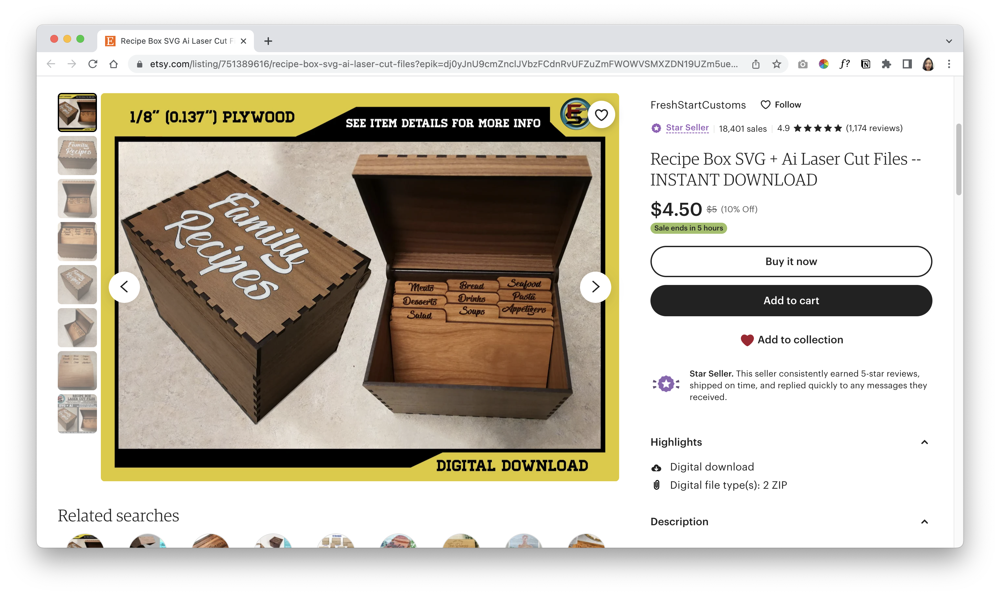
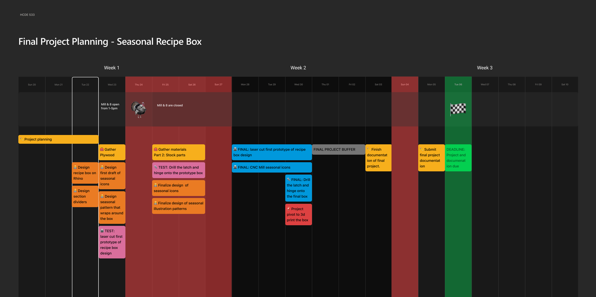
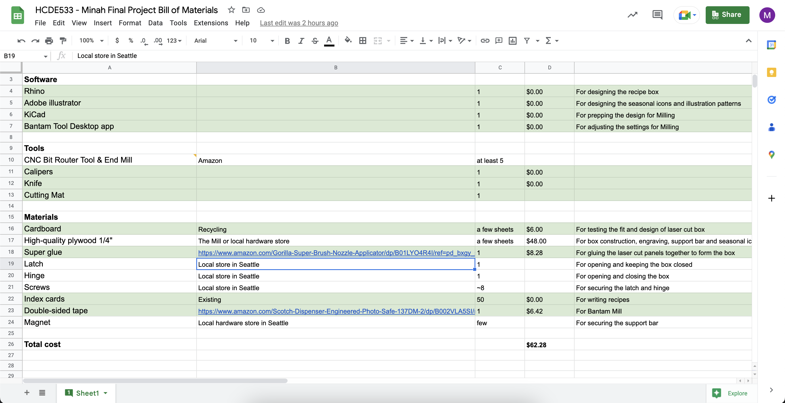

Idea
For my final project, I'm going to create a seasonal recipe box for index-card sized recipes to keep on my kitchen counter. Ultimately, I would like to create four boxes, one for each season. For the purpose of this assignment, my plan is to create at least one.

*Note*: Recipe box images on this page are quick photoshop mock-ups based on a design I found on Etsy.
The purpose of these mock-ups is to communicate the central idea and goal of my project. The final product will most likely be aesthetically different from the product you see in the images.
Problems with digital recipe aggregator solutions
1. I have to wake up the phone periodically with my dirty fingers.
2. I have to dig through a bunch of annoying ads and text on the website to get to the actual recipe.
3. There are plenty of apps that are great at aggregating recipes, but none are great for “in-the-moment” referencing. I've been using Notion app for recipe aggregation up till now. In addition to the problem where the screen goes black every few minutes, I have to tap through a bunch of folders and links to get to the actual recipe.
4. My partner is a novice in the kitchen and lazy with cooking. If it takes too much brainpower and more than a few steps to find a recipe, he's going to revert to ordering takeout.
Use Case
The seasonal recipe box will be used in my kitchen for storing and accumulating recipes for favorite dishes. More than the digital equivalent, the recipe card box will enable simple, distraction-free, hands-free, sharing, contribution and reference during cooking.
Component & Task Breakdown


Box Design & Dimensions
Made for 4x6 recipe cards.
Luckily, it was easy for me to find ai and svg files online for laser-cut recipe box templates. Many creators charge only a small fee to purchase their files.
Instead of creating the design from scratch, my plan is to start with one of the preexisting templates as a base and make necessary modifications (e.g. adding the recipe card rest, adding the illustrations for engraving...etc.).
Timeline
My goal is to finish my project by Wednesday, Nov 30, which gives a buffer of five full days. Since my project is contingent on using the laser cutter at the Mill or 8, I will focus on finalizing the design of the recipe box and components during their days of closure. That way, I'll have all my files ready for printing and engraving when they reopen on Monday, Nov 28.
My project timeline also takes into account days when I know I won't be working, including Thanksgiving and Sabbath Sundays.
Contingency Plan
If something goes wrong unexpectedly and I'm short on time, I will scope down my project plan accordingly:
1. Instead of attaching the box and hinge, I will simply design and laser cut a piece that fits on top of the box.
2. Instead of attaching magnets to secure the box support holder, I won't design a securing mechanism at all.
3. If I keep screwing up the CNC mill or all the machines happen to be out of order, then I will 3d print by seasonal icon and super glue it to the top of the recipe box.
4. The box won't have a recipe card holder.
5. In order to save more time, I won't add a decorative engraving element on the sides of the box.
6. Last but not least, if all the laser cutters are tragically down with no guarantee of being fixed by the project deadline, then I will give myself enough time to 3d print my recipe box.
Bill of Materials
My plan is to get all of the materials by end of Week 1 (Sat 11/26). Link to the Bill of Materials spreadsheet
Special Thanks
Thank you, Junchao! For your feedback, support, and ideas for my final project during office hours. You da best!
Thanks to all my classmates who offered their questions and supports on Discord. Even if they aren't necessarily relevant to my project, they are still very helpful.